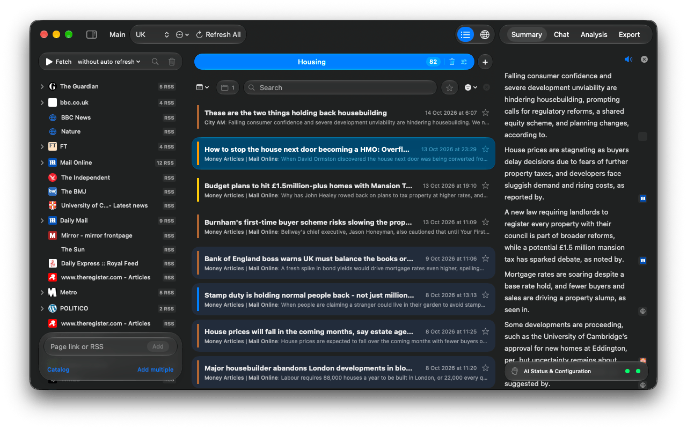
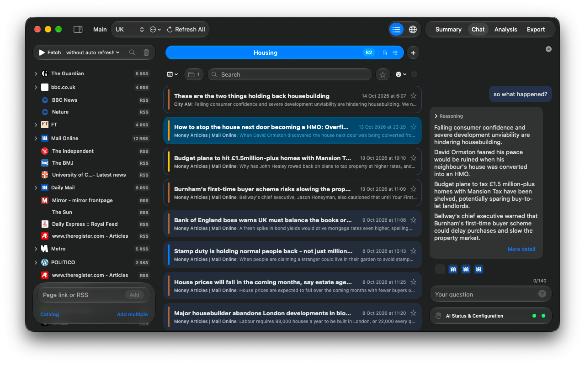

Handbook · AI and processing
Summaries and the news chat
Get a digest of the latest news with sources, or ask questions about your feed.
Summary
- Open the Summary tab in the inspector.
- Press Generate and pick the range: Recent (newest 20), the last hour, 6, 12 or 24 hours, or All time. The count of news is shown next to each.
- The summary covers what the list currently shows, so set filters or search first to focus it.

- Site icons next to sentences are the sources: hover for the headline, click to open the article.
- The speaker button reads the summary aloud.
- Summarise a single story with Summarize this Topic on a folder, a city on the Globe, or any articles you drop onto the tab.
Large ranges are summarised in parts and then combined, so they take longer. A model with a bigger context window needs fewer parts.
Chat
The Chat tab answers questions about the news in the current tab, from the last week: What happened in Spain today?, Compare how outlets cover the strike, Explain this in simple terms.

- It searches your news in every language the feed has. The site icons under an answer are its sources; Reasoning shows how it got there.
- Ask for more and it continues with stories it hasn't told you yet. More detail reads the full article.
- Drop an article onto the tab to discuss that one.
- Each tab keeps its own conversation; the ✕ at the top clears it.
Questions or problems? Open an issue in the
GitHub repository.